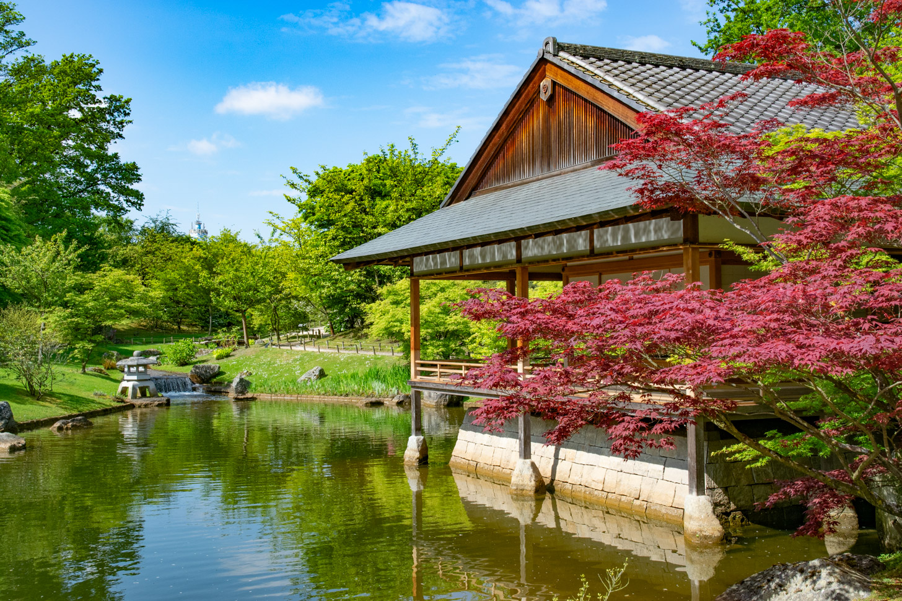

Bezienswaardigheden
Hasselt, België, charmeert bezoekers met zijn imposante Sint-Quintinuskathedraal en betoverende geplaveide straten bezaaid met boetiekjes en cafés. Ontdek de rijke geschiedenis in het Modemuseum Hasselt en het Jenevermuseum, of geniet van een vredige ontsnapping in het weelderige groen van het Kapermolenpark en het Japanse Tuinpark. Hasselt belooft een betoverende mix van culturele pracht en natuurlijke schoonheid.